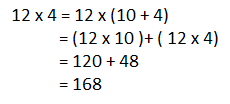

Lesson 12: Multiplying mentally 2 Digit by 2 Digit numbers with Products up to 200
 Explore and Discover!
Explore and Discover!
Explore and Discover!
How do you get the product of 2 digit numbers mentally ? For example , 12 x 4.
Do these steps in your mind :
Step 1 : Multiply the multiplicand by ones in the multiplier. 2 x 14 = 28
Step 2 : Multiply the multiplicand by the tens in the multiplier. 10 x 14 = 140
Step 3 : Add the partial products. 28 + 140 = 168
You can use the distributive property to get the product mentally.
